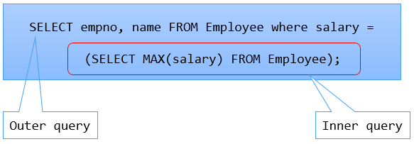

Inner query returns zero or one row to the outer query.
In Employee table, we want to fetch the empno and name of employee who is drawing the highest salary.
A sub-query for the above requirement can be written as follows.
